Paint the inside of a cell, at true scale
A step-by-step tutorial for cellPAINT 2D. No prior cell-biology or software experience needed, and nothing to install — it runs in your browser.
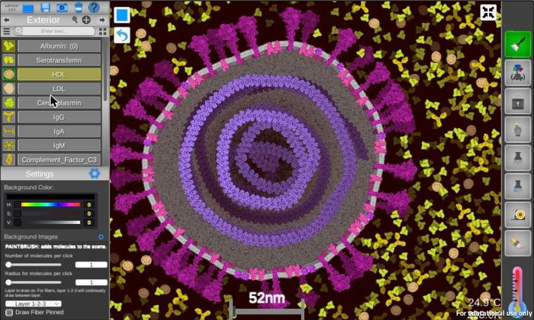
1. What cellPAINT is, and why it matters
A cell is not a bag of loose parts. It is astonishingly crowded: proteins, membranes and nucleic acids packed shoulder to shoulder, all of it jostling constantly. Textbook diagrams almost never show this, because drawing a few hundred molecules by hand at the correct size is punishing work.
cellPAINT lets you paint that crowding directly. Every molecule you place is a real structure, derived from experimental data and rendered at true relative scale. Click a protein in the palette, drag across the canvas, and dozens of correctly sized copies appear — pushing each other out of the way as they go, because the program runs a simple physics simulation behind the scenes.
The result is a picture you can reason about. If your virus looks too big next to the antibodies around it, that is a real scientific error, and cellPAINT will show it to you.
What you need
- A computer with a keyboard and a mouse. A scroll wheel and a working right-click make zooming and panning much easier; a trackpad works but is slower.
- Any modern web browser. cellPAINT 2D runs on the page — there is nothing to download or install.
- About 60 to 90 minutes for the whole tutorial. The warm-up in section 3 takes roughly ten minutes on its own.
- Open autinlab.org/playground/cellPAINT2D and wait for the CellPAINT splash screen to finish. On a slow connection the first load can take 30 to 60 seconds — the program is large. The interface appears when it is ready.
- For a bigger canvas, click the expand icon at the bottom-right corner of the black program area to go full-screen.
- The words “For educational use only” in the corner of the canvas are expected, not an error.
2. A tour of the interface
Everything in cellPAINT lives in three places: a file menu across the top-left, a molecule palette down the left side, and a column of painting tools on the right. The large dark rectangle in the middle is your canvas.
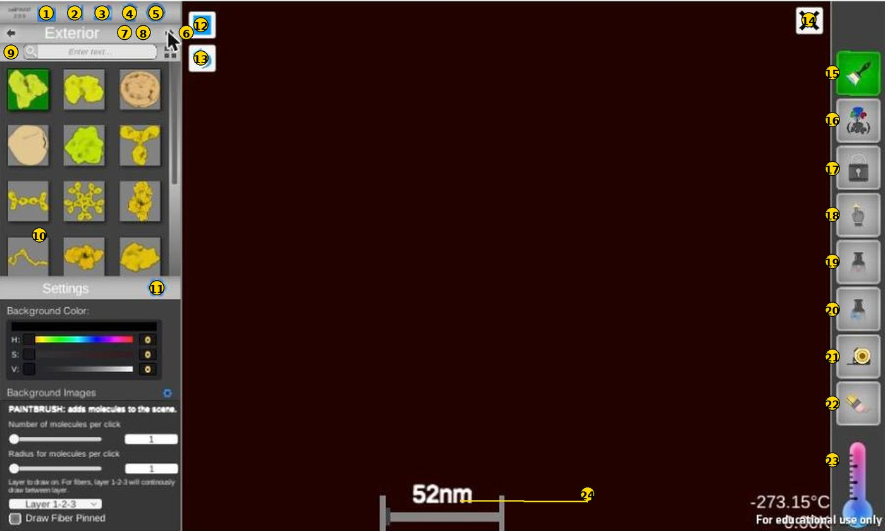
| # | Control | What it does |
|---|---|---|
| 1 | Restore / Load | Opens the LOAD FILE window: built-in recipes, or your own saved scenes. |
| 2 | Save | Writes the current scene to a file (.txt, or .zip when custom ingredients are included). |
| 3 | Snapshot | Saves a .png picture of the canvas. This is how you export finished artwork. |
| 4 | Trash | Clears the canvas. There is no confirmation, so save first. |
| 5 | Help | Overlays labels on every control, plus a Quick Start summary. Click again to hide. |
| 6 | Palette arrows | Step to the previous or next molecule palette, for example Exterior → Coronavirus. |
| 7 | Ingredient Info | Magnifying glass. Shows the selected molecule’s name, description and colour sliders. |
| 8 | Create Ingredient | Plus sign. Build a new molecule from a PDB entry or from an image file. |
| 9 | View toggle + search | Switch between icon grid and named list; the search box filters by name. |
| 10 | Ingredient palette | Click a molecule to select it for painting. Right-click deletes a custom molecule or group. |
| 11 | Settings | Background colour, physics options, background images, and options for the active tool. |
| 12 | Pause / Play | Freezes or resumes the physics simulation. |
| 13 | Undo | Steps back through your recent actions. |
| 14 | Recentre camera | Returns the view to the origin. Click a second time to reset the rotation. |
| 15 | Paintbrush | Adds molecules. This is the tool you will use most. |
| 16 | Group | Select several molecules, press Enter, and they become one reusable ingredient. |
| 17 | Lock | Select several molecules, press Enter, and they freeze so you can paint elsewhere. |
| 18 | Nudge | Click and drag molecules around the canvas. |
| 19 | Pin | Click a molecule to freeze that single copy in place. |
| 20 | Pin-to | Click two molecules to link them together, as if they were binding partners. |
| 21 | Measure | Click and drag to measure a distance in nanometres. |
| 22 | Erase | Click to delete one molecule; Shift-click to delete every copy of that type. |
| 23 | Temperature | Drag up or down on the thermometer to make the scene jiggle more or less. |
| 24 | Scale bar | Shows the real size of the current view. It updates as you zoom. |
Moving around the canvas
- Scroll wheel — zoom in and out. Watch the scale bar change as you do.
- Right-click and drag — pan across the scene.
- Control 14, at the top-right of the canvas — snap back to the centre if you get lost.
- Left-click a molecule to highlight it. Shift-left-click acts on every molecule of that type at once. This modifier works with most tools and is worth remembering.
The Help overlay is your cheat sheet
Whenever you cannot remember what a button does, click the question mark (control 5). Labels appear over every control, and the panel in the middle repeats the essential rules.
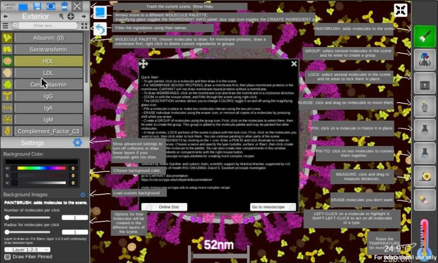
3. Warm-up: your first ten minutes
Work through these steps on a blank canvas. Nothing here can break anything — the Trash button gives you a clean slate whenever you want one.
- The palette on the left opens on Exterior, a set of blood plasma proteins. Click Albumin, the first molecule in the list.
- Click once anywhere on the dark canvas. A single albumin molecule appears.
- Now click and drag. Molecules stream out along the path of your cursor. This is how you fill large areas quickly.
- Zoom out with the scroll wheel until the scale bar reads a few hundred nanometres, then zoom back in. Notice that the molecules do not change size — the view does.
- Find the thermometer at the bottom of the right-hand toolbar and drag upward on it. The temperature readout climbs from −273.15 °C towards room temperature, and your molecules begin to jiggle and shove one another apart.
- Drag the thermometer back down. The motion stops. Cold gives you a still picture; warm gives you a living, self-arranging one.
- Pick a different molecule — IgG, the Y-shaped antibody, is a good choice — and paint some of those too. Compare their sizes.
- Click the Trash icon to wipe the canvas clean. You are ready for the real thing.
- Undo (control 13) works, so experiment freely.
- Pause (control 12) freezes the simulation. Use it when you want to place something precisely and the jiggling is getting in your way.
4. Tutorial: paint a coronavirus
You are going to build a single virus particle from the inside out, then surround it with the blood plasma it would really be floating in. Allow about half an hour. The finished picture is the one at the top of this page.
Step 1 — Find the Coronavirus palette
- Click the right arrow beside the palette name (control 6) once. The title changes from Exterior to Coronavirus.
- Click the list-view icon (control 9, the three horizontal lines) to see names instead of pictures. Names are easier to follow in a tutorial; switch back whenever you prefer the icons.
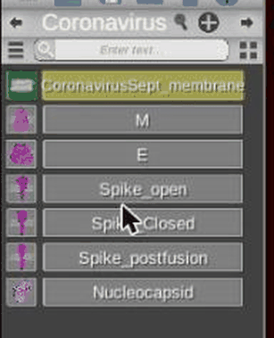
Look closely at the small icons. Some of them sit on a faint grey strip. That strip is a piece of membrane, and it is the program telling you something important: these are membrane proteins, and they cannot be placed in open space.
Step 2 — Draw the membrane
Every enveloped virus starts with its envelope, so the membrane always comes first.
- Click CoronavirusSept_membrane at the top of the palette.
- Press and hold the left mouse button near the middle of the canvas, drag in a clockwise circle about a third of the canvas wide, and release near where you started. The membrane closes itself into a sealed compartment.
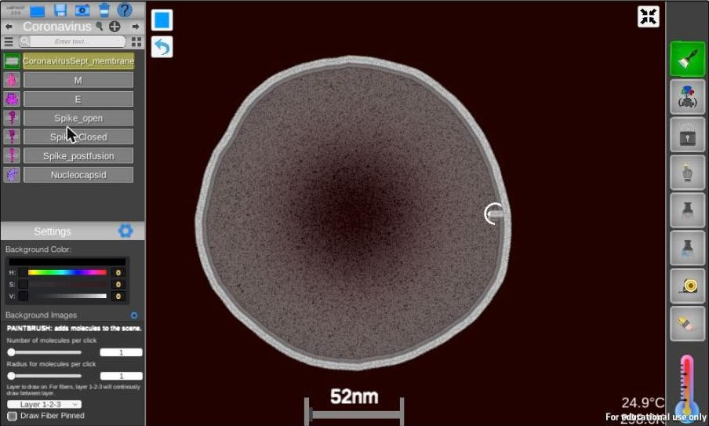
- Direction matters: draw clockwise, not anticlockwise.
- Use one smooth continuous stroke and finish close to where you started. A gap leaves an open sheet rather than a compartment.
- Undo (control 13) or Trash (control 4) and try again. It takes most people two or three attempts.
- Aim slightly larger than you want, because the membrane tightens a little as it closes.
Step 3 — Stud the surface with spikes
The spike protein is what gives a coronavirus its name and its crown of projections. In a real particle the spike is the main target of the antibody response, so it belongs on the outside where antibodies can reach it.
- Click Spike_open in the palette.
- Click directly on the pale membrane band — not inside it, not outside it. A spike snaps into place, correctly oriented, pointing outward.
- Work your way around the circle, clicking every so often, until the particle has a convincing crown.
- Now click M and add plenty of those to the membrane. M is far more abundant than the spike in a real virion, so be generous. Then add a handful of E, which is much scarcer.
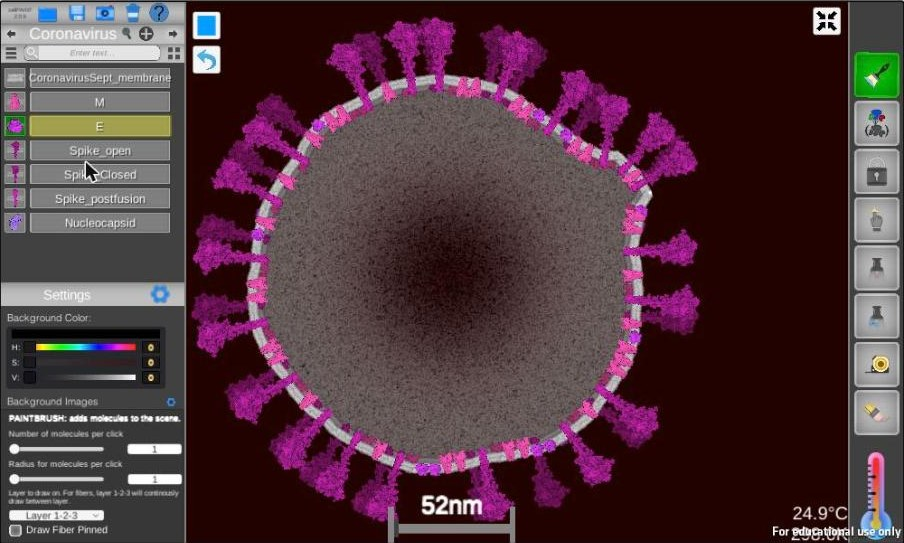
If you see this message, your click landed just off the membrane band. Dismiss it with OK, zoom in a little, and aim more carefully at the pale stripe.
The dialog has a “Don’t show this message anymore” checkbox. Tick it only once you are confident — while you are learning, the warning is useful.
Try the other two spikes. Spike_Closed and Spike_postfusion are the same protein caught in different shapes. The spike changes conformation when it engages a host cell, and cellPAINT ships all three states so you can illustrate that story. Mixing a few closed spikes in among the open ones makes the picture more honest.
Step 4 — Fill the interior
Inside the envelope, the viral RNA genome is wrapped around nucleocapsid proteins into a dense, disordered tangle.
- Click Nucleocapsid.
- Click and drag in long loops inside the membrane until the interior is well filled. Do not try to be tidy — real packing is not tidy.
- If your strokes have left an obvious pattern, drag the thermometer upward and let the physics run for a few seconds. The molecules shuffle and the artificial regularity dissolves.
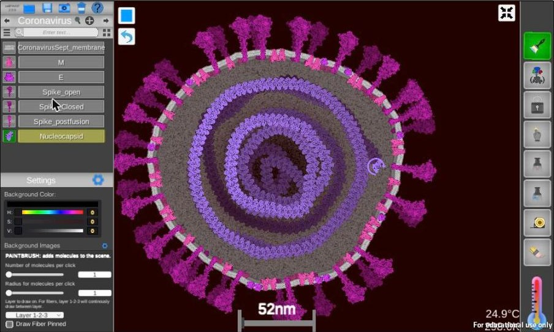
Step 5 — Put the virus in context
A virus particle in the bloodstream is not floating in a vacuum. It is surrounded by plasma proteins at astonishing concentrations, and showing that is the whole point of cellPAINT.
- Click the left arrow beside the palette name to return to the Exterior palette.
- Select Albumin and drag back and forth across the empty space around your virus until it is thoroughly packed. Albumin is about half of all plasma protein, so it should dominate.
- Add IgG — roughly a fifth as much — then scatter smaller numbers of HDL, LDL, Serotransferrin and whatever else catches your eye.
- Take a step back and look. The crowding outside the virus is the part most textbook figures get wrong.
Step 6 — Check your work against reality
This is the step that turns a drawing into science. A real SARS-CoV-2 particle measures roughly 80 to 120 nm across. Does yours?
- Click the Measure tool (control 21).
- Click and drag straight across your virus, from one side of the membrane to the other. The distance appears in nanometres on the line.
- Press Enter — or click Keep current measure in the Settings panel — to keep the measurement on screen. Delete all measures clears them.
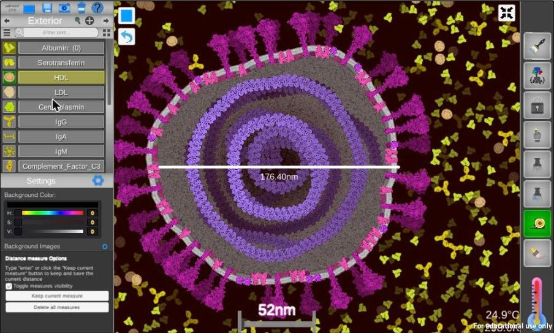
- If your virion came out too big, every protein in the picture is now the wrong size relative to it — the spikes look stubby and the nucleocapsid looks sparse. Trash the scene, draw a smaller membrane, and measure again.
- How many spike proteins did you draw? Published estimates for a whole SARS-CoV-2 particle are on the order of two dozen spike trimers. In a thin slice through the middle you would see only a handful. Most published illustrations, including many on the news, show far too many.
5. The painting tools in full
Each tool in the right-hand column has its own options, which appear in the Settings area of the left panel when that tool is active. Select a tool and glance down there to see what it offers.
| Tool | How to use it | Options in Settings |
|---|---|---|
| Paintbrush | Click to place one molecule; click and drag to place many. | Number of molecules per click Radius for molecules per click Layer to draw on (Layer 1-2-3) Draw Fiber Pinned |
| Group | Click the molecules you want, then press Enter. The group joins the current palette as a single reusable ingredient. | Name the group before creating it |
| Lock | Click the molecules you want, then press Enter. They freeze in place and stop responding to physics. | — |
| Nudge | Drag molecules around. A plain drag pushes with a force; Ctrl-drag moves directly; Shift-drag moves every copy of that type. | Strength of the applied force |
| Pin | Click one molecule to freeze that single copy. | — |
| Pin-to | Click two molecules to link them, as if bound to one another. | Distance to apply Strength Collision on or off |
| Measure | Drag between any two points to read the distance in nanometres. | Toggle measures visibility Keep current measure Delete all measures |
| Erase | Click a molecule to delete it; Shift-click to delete every copy of that type. | — |
| Temperature | Drag up or down on the thermometer. | — |
Recolouring, and finding out what you have painted
Click the magnifying glass (control 7) to open the Ingredient Info panel. It shows the currently selected molecule: its picture, its full name, a short description of what it does in the cell, and three sliders — hue, saturation and value — for changing its colour.
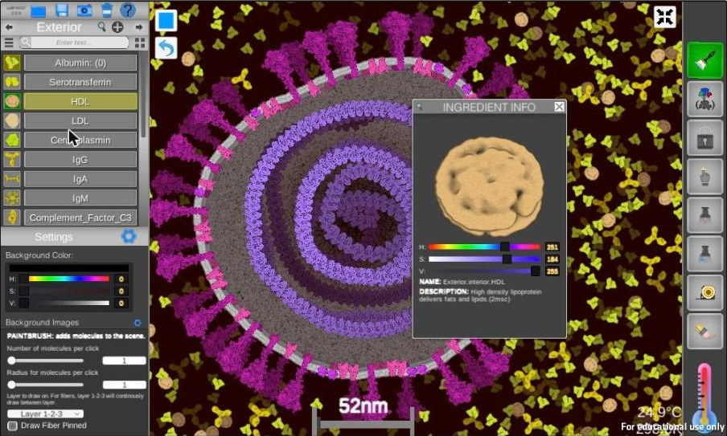
Colour in a scientific illustration should carry meaning. Try giving all the membrane proteins one hue family and all the soluble proteins another, and see how much easier the picture becomes to read.
Grouping and locking: working on big scenes
Two tools exist purely to help you manage complexity.
Group turns a cluster you have arranged by hand — a ribosome with its RNA, say, or a receptor with its bound ligand — into a single new ingredient in the palette. From then on, one click paints the whole assembly. This is the biggest time-saver in the program.
Lock freezes part of a scene so the physics engine stops recalculating it. If cellPAINT starts to feel sluggish as your scene fills up, lock the parts you have finished. You can keep painting everywhere else.
6. Make your own molecule
The built-in palettes cover a lot of ground, but sooner or later you will want a protein that is not there. If a structure of it exists in the Protein Data Bank, you can add it yourself in about a minute.
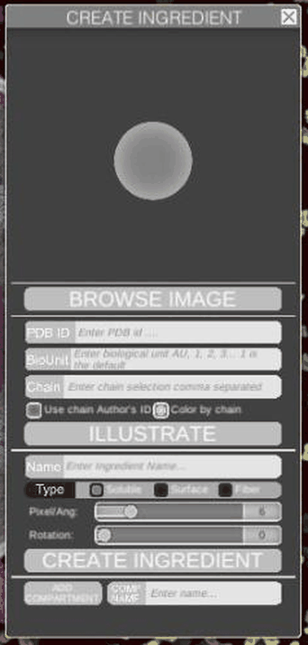
Click the plus sign (control 8) to open CREATE INGREDIENT. From there it is four steps.
- Left-click in the PDB ID field and type an ID — try
1crn, the small plant protein crambin. (Look IDs up at rcsb.org.) The panel fetches the entry’s metadata as you go: the Name field fills in for you, Pixel/Ang is set to a sensible scale, and the experimental method appears at the bottom of the panel. - Click ILLUSTRATE. A spinner appears while the structure is rendered, then the molecule’s picture shows in the window at the top of the panel.
- Choose the ingredient Type: Soluble floats freely, Surface sits in a membrane, Fiber draws as a filament. Getting this wrong is the most common mistake — a membrane protein marked Soluble will drift away into open space.
- Click CREATE INGREDIENT. Your molecule appears at the end of the current palette, ready to paint like any other.
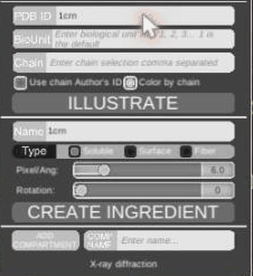
1crn: the Name field and Pixel/Ang have filled themselves in from the
PDB entry, and the method — X-ray diffraction — is shown at the bottom of the panel.The picture is rendered by the mesoscope server, not in your browser, so it depends on that server being responsive. Give it up to a minute, then click ILLUSTRATE again. A sad face means the request failed outright — click again.
Everything else in the panel works regardless, so you can keep typing while you wait.
The rest of the panel
- BioUnit and Chain narrow down what gets drawn: which biological assembly (1, 2, 3…; blank means the default) and which chains, comma-separated. Use chain Author’s ID and Color by chain change how those chains are identified and coloured.
- Rotation turns the molecule; Pixel/Ang sets its size. Pixel/Ang is what keeps your new molecule to scale with everything else, so check it before you paint even though the panel fills it in for you.
- BROWSE IMAGE builds an ingredient from your own
.pngor.jpginstead of a structure — handy for a schematic shape that has no PDB entry. - ADD COMPARTMENT and the COMP NAME field along the bottom create new compartments and new palettes.
- Right-click an ingredient or a group in the palette to delete it. Only your own creations can be removed this way; built-in molecules stay put.
- For genuinely complex recipes — many compartments, many species, defined concentrations — build them in mesoscope and load the result into cellPAINT afterwards.
7. Painting on top of experimental data
This is where cellPAINT stops being a drawing toy and becomes a research tool. Load an electron micrograph as a background image, scale it correctly, and paint molecules directly onto the features you can see. The result is an interpretation anchored to real data rather than to your imagination.
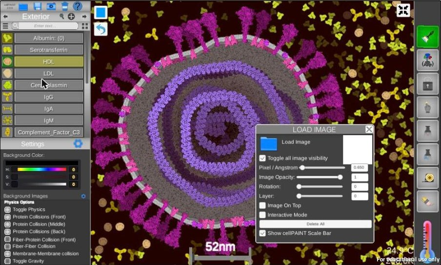
Loading and scaling an image
- Click the small gear beside Background Images in the left panel to open LOAD IMAGE.
- Click Load Image and choose a file (
.png,.jpeg,.tiffor.bmp). - Set Pixel / Angstrom so the image is at the same scale as cellPAINT’s molecules. Use the published scale bar on your micrograph together with cellPAINT’s own scale bar (control 24) to check. Nothing else in this workflow matters if the scale is wrong.
- Adjust Image Opacity so you can see the image and your molecules at the same time, and Rotation to line it up.
- Tick Interactive Mode when you want to drag the image itself into position, and untick it to go back to dragging molecules. Forgetting to untick it is a classic source of confusion.
- Trace the structures you can see: draw the membrane along the membrane in the micrograph, and place proteins where the density suggests they are.
- Untick Toggle all image visibility to hide the micrograph and reveal your interpretation on its own. Image On Top puts the image in front of the molecules instead of behind. Layer controls the stacking order when several images are loaded.
Physics options
The gear beside “Settings” reveals the physics controls. They matter for two reasons: performance, and deliberate cheating.
- Toggle Physics — turns the simulation off entirely, so molecules can overlap freely. Useful when you need a molecule somewhere the physics will not allow.
- Protein Collisions (Front / Middle / Back) — cellPAINT paints on three depth layers. Switch collisions off on a layer and it will accept far more molecules.
- Fiber-Protein Collision, Fiber-Fiber Collision, Membrane-Membrane collision — the same idea, for filaments and membranes.
- Toggle Gravity — makes everything settle downward. Not physically realistic at this scale, but occasionally useful for composition.
Lock the parts of the scene you have finished, or switch off collisions on one or two layers. A crowded scene with full physics is a lot of arithmetic for a browser. The Background Color sliders sit just above these options if you want something other than the default near-black.
8. Saving, exporting, and ready-made recipes
Keeping your work
| Button | Result | When to use it |
|---|---|---|
| Save (2) | A scene file: .txt normally, or .zip when the scene contains custom ingredients. | Whenever you want to come back and keep painting later. |
| Snapshot (3) | A .png image of the canvas. | For a poster, a report or a slide. This is your finished artwork. |
| Restore (1) | Reopens a saved scene, or loads a built-in recipe. | To resume work, or to start from a prepared set of molecules. |
The Trash button (4) clears the canvas immediately, with no confirmation and no way back except Undo. Save before you experiment.
The built-in recipes
Open Restore (control 1) and you will find a short list of prepared projects. Each one swaps the palettes for a different biological system. They give you the right molecules to work with rather than a finished picture, so expect a blank canvas and a new set of palettes.
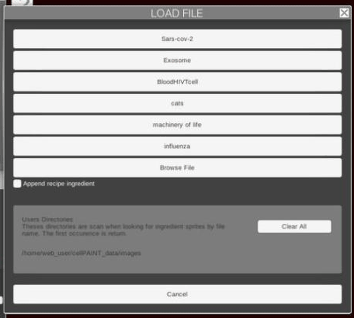
| Recipe | What it gives you |
|---|---|
| Sars-cov-2 | The default. Palettes: Exterior (blood plasma), Coronavirus, mRNA Vaccine, Endoplasmic Reticulum, HumanCell. |
| BloodHIVTcell | Palettes: Exterior, HIV, Cytosol — everything needed for the exercise in section 9. |
| Exosome | Molecules for painting an exosome. |
| influenza | Molecules for painting an influenza virion. |
| machinery of life | A broad general-purpose set, after David Goodsell’s book of the same name. |
| cats | A light-hearted set. Good for a first five minutes with younger students. |
| Browse File | Load a scene or a recipe from your own computer. |
Append recipe ingredient — tick this checkbox before loading and the new molecules are added to what you already have instead of replacing it. That is how you get, say, coronavirus and HIV molecules available in the same session.
The palettes at a glance
A palette is a group of molecules that belong together in one location or one biological system. Use the arrows (control 6) to move between them, and the search box (control 9) to filter by name when a palette is long.
| Palette | Contains (selection) |
|---|---|
| Exterior | Albumin, Serotransferrin, HDL, LDL, Ceruloplasmin, IgG, IgA, IgM, Complement Factor C3 and other plasma proteins. |
| Coronavirus | CoronavirusSept_membrane, M, E, Spike_open, Spike_Closed, Spike_postfusion, Nucleocapsid. |
| mRNA Vaccine | Vaccine_membrane, cholesterol and ionizable lipids in inner, outer and soluble forms, LipidPEG_brush, LipidPEG_Mushroom. |
| Endoplasmic Reticulum | ER_membrane, Spike_SingleUnit, Spike_Closed, Spike_open, Ribosome_Surface, Ribosome SRP, Protein. |
| HumanCell | HumanCell_membrane, GPCR, Ion_Channel, G_Protein, Ras, ACE, RNA, Ribosome. |
| HIV | HIV_membrane, Matrix, Envelope, HLA_II_HIV, VPU, NEF, VIF, P6, VPR and the rest of the virion (BloodHIVTcell recipe). |
| Cytosol | Cytosol_membrane, CD4, CXCR4, HLA_II_TCell, Ion_Channel, G_Protein, Ras, PFK, Ribosome (BloodHIVTcell recipe). |
9. Extended exercise: a mature HIV virion from published data
The coronavirus tutorial taught you the controls. This exercise teaches the discipline: building a picture in which every number comes from the literature. It is the same exercise as in the original CellPAINT-HIV tutorial, updated for the browser version.
- Open Restore (control 1) and load BloodHIVTcell. You now have three palettes: Exterior, HIV and Cytosol.
- If you have an electron micrograph of an HIV particle, load it as a background image (section 7) and scale it. Otherwise draw freehand — but do check your final diameter with the Measure tool. A mature HIV virion is about 120 to 150 nm across.
- From the HIV palette, draw the membrane first, clockwise, then the capsid as a cone inside it — also clockwise.
- Add the membrane proteins, then the contents of the capsid, then the soluble proteins, using the copy numbers below. These are what you would expect to see in a thin slice through the middle of the particle, not in the whole virion.
- Finally, switch to Exterior and fill the surrounding plasma using the concentrations in the second table.
Expected copy numbers in a central slice
| Location | Molecule | Number |
|---|---|---|
| Membrane | Envelope | 1–3, more if clustered |
| Membrane | Matrix | 32 trimers |
| Membrane | NEF | 3–4 |
| Membrane | Cellular proteins such as HLA | unknown |
| Membrane | VPU | not normally in a mature virion |
| Inside capsid | RNA and nucleocapsid | as much as the program allows |
| Inside capsid | Integrase (associated with RNA) | 7 |
| Inside capsid | TAT (associated with RNA) | 2 |
| Soluble, inside and outside capsid | Reverse transcriptase | 7 |
| Soluble | Protease | 7 |
| Soluble | VPR | 19 |
| Soluble | VIF | 1–3 |
| Soluble | P1, P2, P6 | 14 of each |
| Soluble | Cellular proteins | unknown |
Blood plasma composition, from proteomics
Serum albumin is roughly half of all plasma protein and IgG about a fifth; everything else shares what is left. Paint in these proportions and the surroundings will look right.
| Gene | Protein | Concentration (µM) |
|---|---|---|
| ALB | Serum albumin | 644 |
| IGH / IGK | IgG | 53–120 |
| HPX | Hemopexin | 65 |
| TF | Serotransferrin | 42.4 |
| SERPINA1 | Alpha-1-antitrypsin | 39 |
| HP | Haptoglobin | 38 |
| APOA1 | Apolipoprotein A-1 (HDL) | 23.2 |
| — | IgA | 2.8–14.1 |
| FGA, FGB | Fibrinogen | 7.2 |
| C3 | Complement C3 | 6.9 |
| TTR | Transthyretin | 5.3 |
| CFB | Complement factor B | 4.8 |
| A2M | Alpha-2-macroglobulin | 3.0 |
| — | IgM | 0.6–2.6 |
| CFH | Complement factor H | 2.2 |
| CP | Ceruloplasmin | 2.2 |
| C4A | Complement C4A | 1.4 |
| APOB, LPA | LDL | 1–3 |
| INS | Insulin | trace |
- Add a T cell. Draw a Cytosol_membrane alongside your virion, stud it with CD4 and CXCR4, and use Pin-to to link an Envelope protein on the virus to a CD4 receptor on the cell. You have just illustrated the first step of infection.
- Then use Nudge and Pin to distort the virion where it touches the cell, the way a real membrane deforms on contact.
10. Troubleshooting
| Symptom | Cause and fix |
|---|---|
| “Membrane protein can only be drawn on top of a membrane.” | You clicked next to the membrane rather than on it, or there is no membrane yet. Draw the membrane first, then zoom in and click the pale band precisely. |
| The membrane will not close into a compartment. | Draw clockwise, in one smooth stroke, finishing where you started. Start slightly larger than your target size. |
| A molecule refuses to appear where I click. | Something is already there and the physics is rejecting the overlap. Erase a neighbour, or switch off collisions for that layer in Physics Options. |
| Everything has stopped moving. | Either the temperature is at absolute zero — drag the thermometer up — or the simulation is paused (control 12). |
| Dragging moves the background image, not my molecules. | “Interactive Mode” is still ticked in the LOAD IMAGE panel. Untick it. |
| cellPAINT has become sluggish. | Lock the finished parts of the scene, or turn off collisions on one or two layers. Browsers have limits. |
| ILLUSTRATE spins forever, or shows a sad face. | The picture comes from the mesoscope server, not your browser. Wait up to a minute, then click ILLUSTRATE again. |
| My scene vanished. | Trash clears without asking. Try Undo (control 13); otherwise reload your last saved file. Save often. |
| The canvas feels cramped. | Use the expand icon at the bottom-right of the program area to go full-screen. |
11. Where to go next
- The Help overlay (control 5) has an Online Doc button that opens the current reference documentation, and a Go to mesoscope button.
- mesoscope.scripps.edu — build recipes far more complex than cellPAINT’s palettes allow, with several compartments and defined concentrations, then bring them back here.
- rcsb.org — the Protein Data Bank. Every PDB ID you type into Create Ingredient comes from here.
- David Goodsell’s illustrations, and his book The Machinery of Life, are the artistic and scientific tradition cellPAINT grows out of. Worth an afternoon.
For instructors
Section 3 works as a ten-minute demonstration. Section 4 fits a single lab period and produces something students want to keep, which makes it a good assessment piece — ask for the Snapshot plus a short written justification of the copy numbers they chose. Section 9 suits a second session or a take-home assignment, since it requires students to read the literature rather than the software.
The habit most worth reinforcing is measurement. Students will cheerfully draw a virus five times too large; the Measure tool turns that into a teachable moment rather than an invisible error.